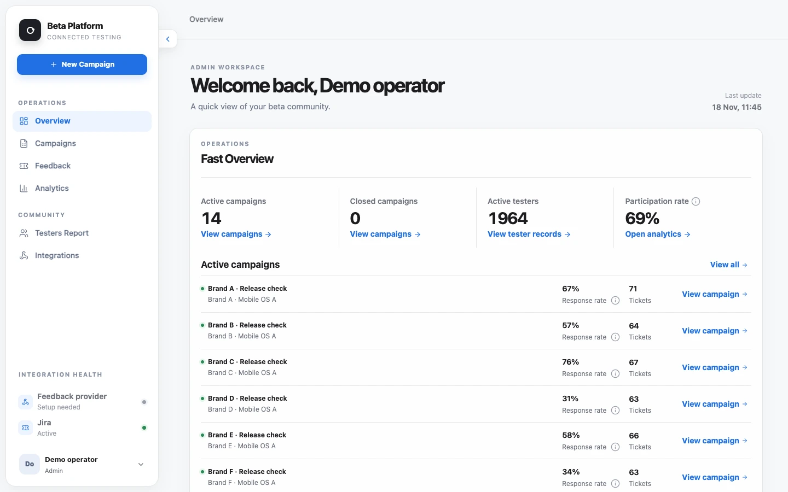

Ideas are cheap now. Judgement isn’t.
AI can turn a description into a plausible interface in minutes. If the description leaves out who decides, with what evidence and what can go wrong, the prototype looks convincing and answers the wrong question. DesAI Thinking is how I keep design decisions in human hands while AI does the volume.
My role Author of the method. A validation designer who orchestrates the agents and uses AI as operational support.
The designer disposes. Select a variant to keep or reject it · illustrative
The bottleneck moves from making to judging.
When ideation and prototyping collapse into one step, the time that used to go into drawing screens goes into deciding which of them deserve to exist. The method is built around that constraint rather than around speed.
Proportions are illustrative, not measured.
Whoever judges best holds the reins.
If judging is the new bottleneck, the advantage goes to the person who already spends their days judging: watching real people use real products, telling a plausible screen from a working one, and deciding what evidence is enough. That is the validation designer’s job. With agents doing the volume, the role moves from checking at the end to steering from the start.
- Creative director
- Sets the direction and refuses the generic.
- Context curator
- Feeds the agents the users, the constraints and the product’s own language.
- Ethical validator
- Looks for who the output leaves out and what it gets wrong.
- Orchestrator
- Decides which agent works on what, in what order, and what comes back in.
Direction and contextProposals, filtered on the way back
In practice: on Beta I shadowed the team, let AI build the MVP and spent my time on ten rounds of validation. On Flowy the model writes the first account of a session and a person decides whether it is true.
AI proposes. The designer disposes.
I treat the model like a junior designer with unlimited speed and an encyclopaedic memory for interface patterns, and no judgement, strategy or sense of context. Four things stay with the designer, and each one filters what reaches the product.
- 01
Context
Give the model the task, the constraints, examples and the product’s own language: a sketch, a wireframe, existing screens. Without them, output drifts to the statistically common, the same generic interface as everyone else.
- 02
Direction
Prompt with structure: the role, the task, who the user is and the format wanted. Disambiguate. A complex internal tool is not a consumer app, and the model will not guess which one you mean.
- 03
Validation
Clean up what comes back: hierarchy, contrast, accessibility, spacing. Then judge the usability trade-offs against the problem the research found, not against how finished the screen looks.
- 04
Annotation
Keep the accepted and the rejected examples with the reason for each, and the evidence behind them. Later outputs can be checked against that record.
Five phases, two lanes.
The phases are design thinking’s, plus a phase zero. What changes is that every phase has two lanes running side by side: what AI contributes, and what the designer decides. The last phase writes the next brief.
Question
Pre-test the premise
What would have to be true for this to be worth building?
Empathise
What did people actually do, and what did they say?
Define
Which decision is hard, and for whom?
Ideate and prototype
What changes if the decision happens earlier, or the evidence is closer?
Test and revise
Can a person complete the task and explain what happened?
AI contributes
Designer decides
One agent, from insight to running code.
I work with coding agents in the terminal and the IDE, Claude Code among them. With the right context they cover every stop on this line, from a cluster of quotes to an application someone can log in to. Choosing how far to go is still a design decision: the further along, the more convincing the artefact and the more expensive it is to throw away.
Research synthesis
Interviews, sessions and tickets grouped into themes, each traced back to its source.
Structure
Problem statements, flows and a first information architecture to argue about.
Visual design
Layouts and components inside the project’s own design system.
Front-end code
Real components, wired to the data they will use.
Full-stack app
A running application with routing, data and the integrations it needs.
Sprints are too slow for this. Bolts aren’t.
If a prototype takes minutes but approving it takes three weeks, the agility is lost in the process. The guidelines borrow the agentic development lifecycle: short, intense cycles called bolts, measured in hours or a few days.
Sprint
Bolts
- 01
Inception
Mob elaboration
The team states an intent. The AI asks clarifying questions and drafts user stories, non-functional requirements and acceptance criteria. The designer and the team redirect it, cut what doesn’t serve the user, and decide together.
- 02
Construction
Mob construction and testing
The AI drafts the logic, the code and the tests while the build takes shape. People review the architecture, the risky paths and what the tests actually prove.
- 03
Operations
Operations
Telemetry and behaviour in use are read continuously. Suggested fixes go back into the next bolt only after a person approves them.
The board updates itself.
A ticket can start an AI coding agent, and the repository moves the ticket: a branch puts it in progress, a pull request in review, the CI result decides between QA, done and blocked. The board shows what engineering is really doing.
git checkout -b feature/…
Speed needs a memory.
Agents optimise locally. Given one prompt at a time, they slowly pull a product apart: architectural drift. The method answers with a persistent brief that every cycle has to read, and a record that every cycle has to write.
- What the product is, as a whole
- The design principles it stands on
- Constraints that must not be broken
- Decisions already accepted, and why
- Bolt 1reads the briefchecks the change against itrecords the trade-offs
- Bolt 2reads the briefchecks the change against itrecords the trade-offs
- Bolt 3reads the briefchecks the change against itrecords the trade-offs
- Bolt 4reads the briefchecks the change against itrecords the trade-offs
Bias audits
Stress-test prototypes with edge cases and under-represented users before anything ships. Models repeat the asymmetries in their training data unless someone looks for them.
Explainability
Be able to say why a design choice or a critical piece of generated code exists. Small, traceable bolts make that possible.
The design system as a guardrail
Tokens and components become rules the machine has to follow, so generated interfaces stay on brand without a person redrawing them.
- Brief for a new iteration
- User, task, starting evidence, expected behaviour, design-system constraints, open questions.
- Record after review
- Variant considered, evidence inspected, who decided, and what would justify reopening the choice.
Where I’ve used it.

Beta Platform →
From shadowing the team to a working MVP in about ten part-time days, then two weeks of testing with the people who use it: ten rounds, more than twenty changes. AI shortened the time between deciding a change and putting it back in front of them.

Flowy →
A research question decided what the SDK had to capture. The model writes the first account of a session; the reviewer checks it against the replay before anything is acted on.

SEL →
A research setup that needed scripts and a computer became the brief for an educator platform, built with AI-assisted development and kept observational, never diagnostic.
This is a method in development. Each project uses different parts of it, and a comparative study of its impact is still future work.